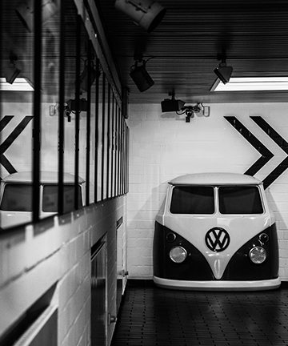

Executive Summary
The objective of program is EWM transformation from old ET2000 ECC system to EWM 9.5 to develop a future ready digital platform for After Sales – Spare Parts warehouse & business Operation.
Ongoing transformation program “EWM” (2018 -2027) develops a common template for NSC/NSO based on SAP EWM . Pilot is OTLG in 2020,followed by global rollout till 2027
Successful Go-Live
4
Upgrades
2
Releases
2

Module Coverage
Core functional areas included in scope.
EWM (Extended Warehouse Management)
Challenges
Business challenges we came across the rollout.
Contribution to After sales - Target to improve operating profit by +50%
Process Standardization
KPI comparability – increasing transparency
E2E Process efficiency
Key Benefits & Highlights
Business outcomes we target across the rollout.
SAP ET2000 MVP Build
Cutover Tool through Power BI – Realtime
Developed 4-Eye Q-Gate Method
Successful Technical Upgrade to S/4HANA 2023
Automation of User Access, Backorder Processing, Batch Determination
Centralized AIF Platform for Interfaces Monitoring
Key Highlights
Business outcomes we target across the rollout.
Process
Fragmented process /data landscape (28 separate system with little common core. Brand independent parts logistics optimized supply chain.
Technology
Outdated technology – SAP ECC running out of maintenance 2027/30.
System
ET2000 is beyond control due to its complexity & size
Roadmap — Story
As the program progresses, each year focuses on regional rollouts and stabilization.
2025
Japan
2026
Japan
2027
Japan
2028
Japan
2029
Japan
2030
Japan
2031
Japan